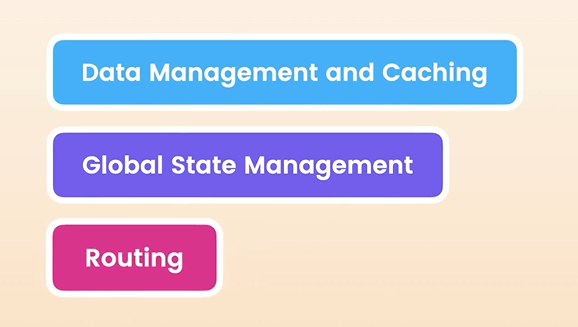

HOME
What You'll Learn
What exactly we will learn
Now let's take a look at the way this course is designed and what
exactly we will be learning.
React Query
In the first section we dive into React Query.
React Query is a popular library for data management, and caching in
React applications.
With React Query, you never have to use the effect hook to fetch data,
take care of errs, and loading indicators.
All those concepts are built into the library.
We also get lots of other features like...
- Caching
- Automatic Retry
- Automatic Refresh
- Paginated Queries
- Infinite Queries
By the end of this section we will add caching and infinite scrolling
to our game hub project.
Global state management
In the second section we will cover global state management in react.
We will cover basic tools for global state management in react....
- Reducers
- Context
- Providers
We will also explore a popular state management library
What about redux??
Well, Redux needs a dedicated course.
Furthermore, with the tools we have available in modern times, Redux
is actually not neccessary.
We will see some examples and cover this in more detail during this
section.
Routing with react router
In the third section we will cover Routing with React Router, which
enables us to create multi-page apps.
In this third section we enhance the game hub project with a page for
showing game details.
So.. what will I learn?
After completing this course you should have a solid understanding of
3 main concepts...
